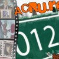
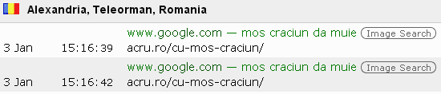

Bani, poze cu femei, informaţii despre fete de bani gata relativ agresate, adevărul despre pericolul supravegherii video ilegale şi fotografii cu vedete sexy. Astfel arată retrospectiva anului 2012 dacă luăm drept unic criteriu de performanţă traficul pe care cele mai populare articole l-au generat. Clasamentul celor mai bune subiecte abordate pe ACRU.ro (strict din punct de vedere al numărului de accesări) aduce două surprize plăcute, dar confirmă parţial temerile exprimate aici.
{kind=link}
Top 5 trafic în 2012
- “www.DDjobs.ro, ţeapă electorală sau şansa românilor de câştiga bani?”. Surprinzător, pentru prima oară de când analizăm statisticile privitoare la comportamentul utilizatorilor de Internet, liderul de trafic e un text muncit şi documentat, a cărui elaborare a durat câteva ore bune. Şi dacă tot vorbim despre conduită în mediul virtual, trebuie precizat că analiza platformei miracol a PP-DD a fost copiată (integral sau parţial) în vreo şase locuri, inclusiv pe ddjobs, site-ul obiect al criticii argumentate! Românii sunt deştepţi, originali şi muncitori, ştim.
- “Moş Crăciun e şi el om” e un articol care conţine un paragraf compus din trei rânduri. Şi tot atâtea poze. Se situează confortabil pe poziţia secundă a topului, reuşind să atragă cu doar 25% mai puţine vizite decât ocupantul primului loc. Dacă ne uităm la termenii căutaţi cu Google, găsim şi explicaţia rezultatului:

Ce mai face Moş Crăciun prin Teleorman
La drept vorbind, ne îndoim că bătrânelul îmbrăcat în roşu ar fi preocupat pe cineva fără Crăciuniţa blondă.
- Spre stupoarea minţilor alfabetizate, publicul n-a uitat de Oana Racoviţă, eleva violata şi nu prea. Există încă mii de români care caută informaţii şi imagini cu celebra victimă a pornirilor pidosnice ale profesorului de sport din liceul Jean Monnet. Uşa carierei de asistentă TV e încă larg deschisă pentru tânăra gălăţeancă.
- “Big Brother îţi goleşte apartamentul” e articolul care şi-a făcut loc în clasament deranjând una dintre afacerile momentului: instalarea sistemelor de supraveghere la bloc. După ce campaniile de montat repartitoare cu forţa s-au epuizat şi au apărut primele victime nemulţumite, băieţii deştepţi din administraţia locală s-au reprofilat în securişti video. Dacă demonstrezi cu legea în faţă (şi logica la purtător) că monitorizarea interiorului scărilor de bloc e ilegală, intruzivă şi ineficientă, te vor căuta ca să te înjure, sub varii pretexte. Astfel, rezultă o audienţă mai ridicată pentru textul dedicat “ochilor din hol”.
- “Alexandra Stan şi bărbaţii” continuă să aibă o relaţie specială, motiv pentru care ultimul loc al topului preferinţelor vizitatorilor e ocupat de un material cu o tentă ruşinos de mondenă.
{kind=link}
Top 3 dezastru în 2012
Din motive paralele cu obiectivitatea, bilanţurile anuale obişnuiesc să omită contraperformanţele. Încercăm să evităm capcana adevărurilor parţiale şi vă prezentăm nu doar “best of”, ci şi “worst of 2012“.
{kind=link}
Cele mai slabe prestaţii în raport cu traficul generat au fost înregistrate de trei articole publicate sub eticheta “util”. Ironic, nu?
Mai nimeni n-a vrut să ştie cât curent electric consumă Internetul şi nici cum pot fi prevenite fraudele financiare cu ajutorul unui soft. Nici destinul copiilor bolnavi de cancer n-a suscitat vreun interes aparte, astfel că textele respective ocupă ultimele locuri în clasamentul traficului întregului an 2012. Adică sunt cele mai proaste, în viziunea publicului.
În concluzie, vă dorim să nu confundaţi calitatea muncii cu eficacitatea rezultatului. Să aveţi un an nou eficient!
Comments on this entry are closed.